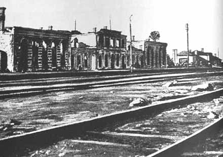

|
||||||||||||||
THE GERMAN OCCUPATION - 3Confiscations and Forced LaborConfiscations, “Contributions,” Dispossession. From the first day of the occupation, a campaign of confiscation and robbery was launched. Before the Jews were incarcerated in the ghetto, German officers and soldiers would visit their homes and take whatever caught their fancy. The authorities also constantly ordered the Judenrat to supply them with furniture, clothing, eating utensils, footwear and so forth. On one occasion the Germans demanded thirty chairs and thirty white tablecloths within two days; another time it was cutlery, furniture, boots, and curtains. There were also “contributions” (ransom payments) in money and valuables. Already at the end of June 1941, the Jews were obligated to raise one million rubles, with the Judenrat’s financial department responsible for the implementation. Within two months the Jews were told to “contribute” some $200,000. The Grodno municipality also took its share of Jewish property, exploiting the existing decrees and adding some of its own. If differences arose between the municipality and the Judenrat, the Germans automatically sided with the former. A case in point concerned the restrictions that the municipality imposed on workshops that had existed for dozens of years and on those that received permits on July 23. The municipality barred the operation of various types of workshops – locksmiths, sewing, sheet-metal – and also carpentries, bakeries, and shoemakers’ shops. On July 24, Brawer complained to the military commander. Two days later he was informed that the Germans supported the municipality’s stand. Moreover, the commander ordered the municipal administration to place “Aryans” in the Jews’ shops so as to ensure continuity in the city’s economic life. Two months later, when the Jews on two main streets – Dominikanska and Orzeszkowej – were forced to leave their homes and move elsewhere, they were forbidden to take their belongings. The First Year in the Ghettos (November 1941–November 1942): The “Stable” Period Establishment of the Ghettos. In November 1941, shortly after Grodno was annexed to the Bialystok district, the city’s Jews were transferred to two ghettos about 2 km. apart from each other. This separation would later facilitate the Germans’ ability to exterminate the occupants. The smaller ghetto was liquidated a year after its establishment, while the larger one survived it by a few months. Two main criteria determined the ghettos’ location: less need to transfer the Jews from place to place within the city; and an attempt to worsen their situation to the maximum by concentrating them in areas where the physical surroundings – sanitation, water and electricity, roads, etc. – were not adequate for the occupants’ needs. A week before the Jews entered the ghettos, Commissar von Ploetz issued an order to the commissars of the various units:
10 Yad Vashem Archives, JM/11200, Fond 1, OPIS 1, Del 15, 23.10.1941 no. 11. The second ghetto (Ghetto Two) was created in the Slobodka suburb, behind the railway tracks, to the right of the road leading to Skidel Street, opposite the market square and the barracks area. This part of the city was broader and more open, with fewer houses. Some 10,000 Jews were incarcerated in this ghetto, which was larger in size than the main ghetto but more dilapidated. It, too, was sealed off with a fence, which ran along Skidel Street parallel to the road. The entrance to the ghetto was from Artyleryjska (afterward renamed Kremer) Street. Generally Jews were sent to one ghetto or the other based on their work; the first ghetto was intended for “productive” workers, the second for the “unproductive.” Consequently, even the Jews of Grodno were led into believing that Ghetto One was meant primarily for skilled workers and that its occupants enjoyed automatic protection, whereas the authorities had no use for those in Ghetto Two and their lives were therefore in danger. Before they entered the ghetto the professionals were ordered to obtain a work permit. Panic spread throughout the city, and long lines formed outside the Judenrat offices for the permit. Many were granted such certificates and entered the first ghetto even though they were not artisans, while some vitally needed professionals were forced into Ghetto Two. The evacuation of the Jews from their homes and their transfer to the ghetto was executed swiftly and without consideration for the harsh weather. The Jews were given only six hours (from noon until 6 P.M.) to move their belongings – without the use of vehicles – and the result was that thousands of Jews streamed toward the gates of the ghetto. The night brought with it the first snow, and many of the evacuees fashioned homemade sleds to facilitate their move. Although the authorities barred anyone who entered the ghetto from leaving again, many managed to go back and forth to their homes several times in order to remove additional items. Frequently the Jews encountered Polish hooligans who attacked and looted them, despite the authorities’ explicit prohibition of the presence of non-Jews in the streets while the Jews were being transferred to the ghettos. Those whose houses were inside the ghetto had to share them with the newcomers, whereas the Jews who were evicted from their homes were ordered to find alternative lodgings. Some acted promptly, seized an apartment, and moved some of their belongings. Others turned for help to the Judenrat’s housing department, which was established at the same time as the ghettos. Housing became an acute problem and preoccupied the entire presidium of the Judenrat. Because of the overcrowding and the shortage of flats, hundreds of families remained without a roof over their heads, and the streets were filled with piles of furniture and bedding. The synagogue and the batei midrash were also converted into quasi-lodgings. Those with good connections received better apartments, but the Judenrat realized that a general solution had to be found, as winter was approaching. A housing committee, headed by lawyer Fuerstenberg, was set up, and within two or three weeks an arrangement had been found for everyone. To relieve the congestion, the housing department turned to the construction department, which renovated old buildings and in some cases actually built new apartments. For example, the Slobodka barracks, which became the site of the Judenrat office in Ghetto Two, were completely renovated. Safety and order inside the ghetto were the responsibility of the Jewish Police, while outside the ghetto the German Schupo was in charge – until November 2, 1942, when the ghettos were closed. German policemen, under the command of Franz Osterode, manned the entrance to the ghetto, checking exit passes and examining those returning from work. In particular they searched the starving Jews for food they might be trying to smuggle into the ghetto. Serving under Osterode were some 40-50 German policemen and a similar number of local auxiliary police. The Gestapo headquarters in Grodno was located on Hoovera Street (the house of Dr. Finkel). After the ghettos were sealed off permanently, on November 2, 1942, and no one was permitted to enter or leave, the Gestapo moved its command post into a former Jewish shop near the entrance to Ghetto One, to facilitate more efficient supervision of the Jews’ movements. Organizing Life in the Ghettos. Upon the establishment of the two ghettos, the Grodno Judenrat also split into two. In the first ghetto its offices were in the three buildings of the former Yavneh School on Zamkowa Street, and in the second ghetto, as mentioned, in the renovated barracks. In both ghettos parallel institutions and departments were set up to deal with key spheres, such as finances, health and clinics, work, kitchens, and so forth. The heads of the two Judenrats were both lawyers, Izaak Gozhanski in Ghetto One and Avraham Zadai in Ghetto Two, and both were subordinate to David Brawer. For a time the ghetto became a kind of autonomous Jewish city, with only technical connections to the general municipal area, such as for the supply of power and water. The Jews’ incarceration and their severance from government and municipal services forced the Judenrat to assume many new tasks, such as providing food and housing, maintaining workshops, and ensuring the operation of such services as health, police, courts, and so forth. The relative quiet that characterized the first year of the ghettos enabled the Judenrat to ease the Jews’ plight by creating a very large bureaucratic apparatus, which in itself became a source of livelihood for many ghetto occupants. Some 850 individuals were employed by the Judenrats of the two ghettos. The Grodno Judenrat consisted of thirteen departments, which dealt with nearly every facet of life. The departments’ power and authority were dependent on the conditions in the ghetto and on the nature and scale of the Germans’ demands. Thus, the supply, work, and confiscations departments wielded more power than the others. The Judenrat’s staff was exempt from forced labor and, for a time, from transports as well. The Judenrat also endeavored to protect the core of the community’s intelligentsia as long as it was able. Financial and Economic Operations. The Judenrat took upon itself an enormous range of tasks, and its expenses were correspondingly immense. Large sums had to be paid to the municipality in exchange for the apartments in the ghettos and the supply of water and electricity. The Judenrat also underwrote the renovation of residential dwellings and of offices for the Germans; it developed workshops, maintained health and sanitation services, assisted the needy, and paid wages to its staff. In addition, it frequently had to bribe Germans with cash or with goods such as furs, clothing, new furniture, and the like. The finance department – headed by Yehoshua Suchovlanski, a former Grodno deputy mayor who was a gifted economist and a pillar of the ghetto economy – coped successfully with these prodigious difficulties and was able to cover the Judenrat’s vast expenditures. Established in June 1941, the finance department was ordered, as its first task, to collect from the Jewish community a ransom payment of one million rubles for the Germans. Initially only the affluent were taxed, but gradually a broader taxation system came into being which remained in effect until the ghettos’ liquidation. The Judenrat’s revenues derived from property tax (paid by the wealthy), income tax, rent, income from the ghetto workshops, payments for electricity and water, and payments for release from forced labor, all according to means. The concentration of the Jews in the ghettos was a devastating blow to their economic activity. To begin with, they were cut off completely from the longstanding and vital economic ties which they had formed with the city’s non-Jews. Judenrat head Brawer considered the supply of food to the ghetto to be one of the Judenrat’s major functions. Thanks to his influence and his intercession with the German army and the civilian authorities, he was able to procure for the ghetto a larger food allocation. Ya’akov Efron, the director of the supply department, also spared no effort, and the combination of his organizational skill and the intensive endeavors of the Judenrat overall, meant that the food situation in the Grodno ghetto was less severe than in other ghettos. True, as was usually the case, the affluent enjoyed better conditions and the poor made do with the scraps; but the fact remains that in Grodno, in contrast to other ghettos in Poland, no one died of starvation. In both ghettos, food was distributed to holders of ration cards at special stations. The supply department provided the bakeries with flour, wood or coals for fuel, and salt. The ghetto occupants received about 200 grams of bread a day in return for a token payment. The Judenrat also ran a butcher shop, in which meat (usually horse meat) was available from time to time for card-holders. Potatoes were stored in the cellar of the Great Synagogue and were distributed there. In both ghettos the public kitchens played a major role. The kitchen in Ghetto One was located in the Great Synagogue (to the left of the main entrance), and in Ghetto Two in the basement of the match factory. The commodities were furnished by the supply department. Meals were usually served “with without” (i.e., without meat or fat), but a hot, nourishing broth was prepared and served with a piece of bread (50-100 grams). Occasionally, when the kitchens received a bit of meat or some bones, a separate pot was used for those who wanted kosher food. On some days the kitchen in Ghetto One served up to 3,000 meals, in return for a token payment – the only hot meal for hundreds of families. The poor and the indigent received meals free of charge, upon presentation of a document from the social-welfare department. The kitchens were particularly important in the winter months, when the shortage of trees left whole families without fuel and subsequently they could not heat water for drinking. In return for a minuscule payment, or even for free, a hot drink could be had in the kitchens (barley coffee) from 5 A.M. to 8 A.M. and from 7 P.M. until 9 P.M. Nearly all the workers came in for a “morning coffee.” In both ghettos, plots of land and gardens were worked at the initiative of the supply department. In Ghetto One the land in question was located in the old Jewish cemetery; in Ghetto Two it was the large square opposite the Jewish orphanage, on the way to Skidel (formerly the He-Halutz garden). Some plots were located next to Yosilevich’s match factory, where potatoes, beets, cabbages, and onions were grown. The work was done by Jewish gardeners. For a time the Germans let the Jews go on working their former gardens, which were now outside the ghetto, particularly in the residential suburb. An agricultural course lasting more than six months was held, and the participants were exempt from work. Work Inside and Outside the Ghetto. The occupants of the Grodno ghetto, like their brethren in many other ghettos across Poland, adopted the slogan, “salvation through work.” In other words, nearly everyone believed that as long as the Germans considered the ghetto occupants to be productive elements who were useful to their economy, they would let them live. The Germans, for their part, helped cultivate the idea that work inside and outside the ghetto for their war industry would protect the Jews from extermination. The Judenrat also advocated this approach. Brawer even went to Bialystok in order to study methods of establishing and managing small factories, and a variety of workshops and plants were set up in the ghetto to supply goods to the city proper, to the army, and to the Gestapo. Jews from both ghettos also worked outside. The labor department, which had been set up in the first days of the Judenrat in order to supply the required number of Jews for forced labor and other duties, was in charge of arranging the work in the ghettos. The gathering place for the Jewish workers was by the gate. In the pre-ghetto period all the Jews had to report for work daily, although they were taken outside for forced labor only a few times a week. Those who worked outside the ghetto received a food card and were entitled to bread and meat according to the rations given to the working class. The labor department had a large bureaucratic apparatus that kept an exact record of all Jews, the fit and the unfit for work, according to their professions and their labor brigades. Some brigades had a better reputation than others and workers vied with one another to join them. Such were the brigades that worked for the Gestapo; to get a job with them meant safety for the workers and their families. Because so many wanted to join these brigades, their leaders could earn good money in return for accepting workers. But some other brigade leaders were also considered “strong” and “well-connected,” and took money from workers. Bribe-taking incensed the Judenrat, which monitored the heads of the departments and frequently replaced them. Orders for workers came from the German Ministry of Labor, which also issued the work permits for individuals and for groups. Some Jews worked separately as skilled professionals and received personal permits, whereas for groups that did a particular job a collective permit was issued stating the number of workers. In the latter case, those in charge could maneuver and mobilize different people each time. Work permits carried a time limit but could be extended. They had to state the exact place where the work was being done and the time it commenced. Jews worked ten hours a day, and anyone who was late or left the site without permission was punished. Some were even executed on the charge that they displayed contempt for work or because they had been playing cards during working hours. Artisans were paid 0.45 marks an hour, trained workers received 0.38 marks an hour, and simple laborers got 0.35 marks. Women were paid 75 percent of the men’s salary. As already mentioned, half the salary was deducted for the Grodno Commissar’s office, and the remainder also did not reach the workers directly but was paid to the Judenrat. The records of the payments that were transferred to the municipality for Jewish workers show that in addition to working for the army and the city, they were utilized in various factories – for the manufacture of leather, tiles, juices, bricks and plywood, and beer – and in a sawmill, a carpentry workshop, on roads, in the offices of the district administration, and elsewhere. Most of the Jews preferred to work outside the ghetto, as this entitled them to higher salaries, better food rations, and even enabled them to smuggle food into the ghetto. Moreover, the work permit gave its holders a sense of protection from the various orders and edicts. Yet there were also wealthy Jews who had the means to find others to replace them, paying both them and the Judenrat. To fill the work quotas, Jewish policemen, in return for a few marks, would sometimes round up beggars and send them to work in place of the well-to-do. Eventually the system became institutionalized and the labor department itself made such arrangements. The Ghetto Shops and Workshops. Inside the ghetto there were a number of private shops that sold smuggled goods or products manufactured in the ghetto in privately owned workshops. The latter produced shoes, sheet-metal, garments and other necessities of life. Some of their products were destined for clients outside the ghetto. The Judenrat’s commerce and crafts department collected a tax on signs. The stands were only semi-legal, and the shopkeepers would close their businesses whenever Gestapo and SS personnel, or even ordinary Germans, appeared in the ghetto – usually to inquire about the origin of the items on sale. Some well-to-do artisans established small plants in the ghetto; two of them produced cooking oil (one belonged to Meir Trachtenberg), and the others made artificial honey, starch, candies, and flour. Their owners became “wealthy” (in terms of the place and the time) and had to pay taxes to the Judenrat’s finance, commerce and crafts departments. As a rule, these plants were kept hidden from the Germans. Von Ploetz, the Grodno subdistrict commissar, took a leaf from the Bialystok ghetto and opened additional workshops in Grodno. The idea was to produce items for the German war economy and to supply the personal needs of army and Gestapo personnel stationed in Grodno. The new workshops were therefore considered to be of prime importance. Among their products were shoes and boots in large quantities, brown shirts and skiing equipment for the army, and felt shoes for the German police. The German-run workshops received large orders from the army, as for instance: 4,000 army shirts, 20,000 pairs of slippers, 30,000 pairs of felt shoes, 15,000 pairs of leather shoes, work clothes, processing 40,000 meters of cloth, padded jackets and trousers, as well as large numbers of brushes and paintbrushes. The Germans supplied the raw materials. In their workshops the Germans employed the most highly skilled workers; the permits issued to them were considered tantamount to “life insurance.” Many, then, were prepared to pay a great deal to be assigned to these workshops. Others drew on their connections in the Judenrat, a situation that made for much envy. The City Commissar kept close watch on the Jews’ work. If the productivity rates fell, he used severe pressure and even threatened to send all involved to a “work-education” camp, where these unproductive elements would be re-educated under strict supervision. And indeed, such a camp had been established by the Grodno municipality. The detention in the camp usually lasted from two weeks to six months; it contained separate sections for “Aryans,” for Jews and for women. The camp was first activated after Easter 1942, but there is nothing to suggest that Jews from Grodno and its surroundings were “re-educated” there. Deportations from the Ghetto  The Lososna railway station. From here the trains left for the death camps Home |
||||||||||||||